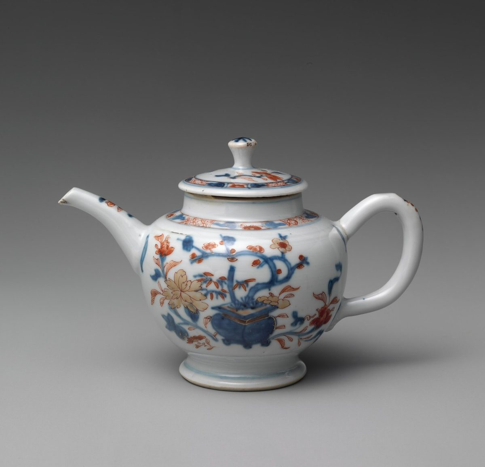
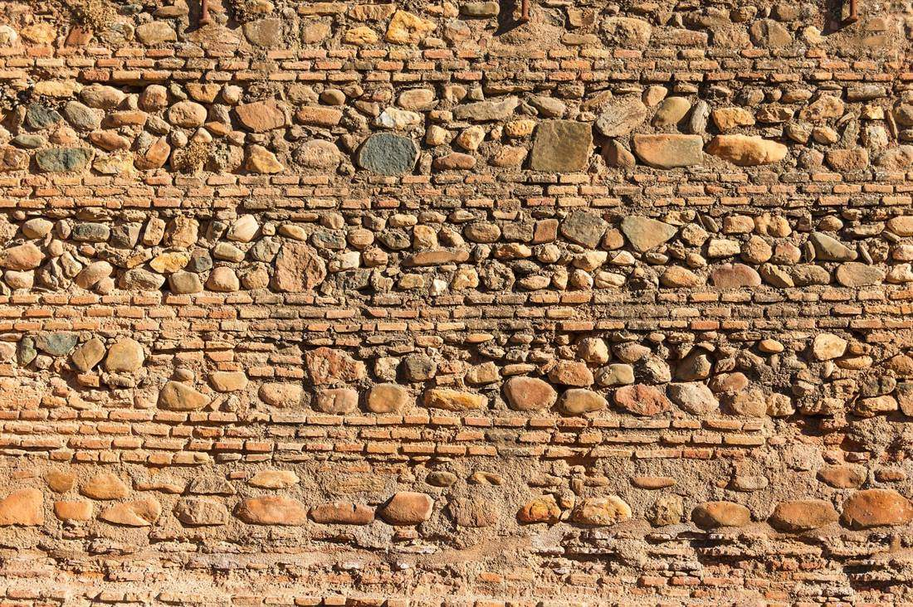

1
電源レール
ボードの縁に沿って、横に長く並ぶ穴の列。印は赤い線と青い線で、プラスとマイナスの側を示します。電池や電源につないだ線を、ここから各所へ分けます。

2
ブレッドボードの6つの部位を、ひとつずつ。制作側の連想で、お店の理念・由来とは無関係です。
ボードの縁に沿って、横に長く並ぶ穴の列。印は赤い線と青い線で、プラスとマイナスの側を示します。電池や電源につないだ線を、ここから各所へ分けます。

中央の溝をはさんで上下に並ぶ、5つ穴ひと組の縦列。同じ組の5つの穴は中でつながっていて、部品の足を差した穴どうしが、そのまま結ばれます。

ボードの真ん中を横切る、浅い溝。上と下の端子ストリップは溝でつながっていないので、部品をまたがせて差すと、足が左右の組に分かれます。

縦に1から、横にaからjまで。印刷された文字と数字で、「c12」のように穴の場所を言い表せます。図面と見比べる手がかりになります。

ボードの左右の縁にある、出っ張りと凹みの組。つなぎ合わせると、ひとまわり大きなボードとして使えます。

ボードの底面に貼られた、はがして使うシート。台紙に貼って、動かない作業台にできます。

各部位の横の写真はフリー素材のイメージで、その部位や商品を写したものではありません。
ギャラリー(イメージ)


お店のこと
所在地とInstagramのみ確認できています。そのほかの情報は準備中です。
| 所在地 | 〒817-1701 長崎県対馬市上対馬町比田勝956 |
|---|---|
| 電話 | 準備中 |
| 営業時間 | 準備中 |
| 定休日 | 準備中 |
| ご予約 | 準備中 |
| 駐車場 | 準備中 |
| SNS | Instagram @cafe_tsushima_ |